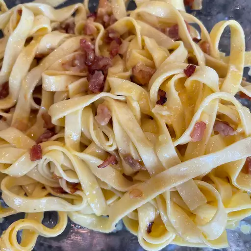

Home
Carbonara

Description
This carbonara is a delectable, mouth-watering pile of yummy goodness!
Ingredients
- 2 tablespoon olive oil
- 2 slices of bacon, cut into strips
- 1/4 onions, cut into thin strips
- 2 cloves of garlic, chopped
- 1 serving of pasta
- 1/4 of cup of Parmesan cheese
- 1 large egg
- salt and black pepper
Steps
- Heat olive oil in a large heavy saucepan over medium heat. Heat olive oil in a large heavy saucepan over medium heat. Stir in garlic when bacon is about half done. Remove from heat.
- Bring a large pot of lightly salted water to a boil. Add pasta and cook for 8 to 10 minutes or until al dente. Drain pasta, then return it to the pot.
- Whisk Parmesan and egg together in a medium bowl. Pour bacon mixture over pasta. Season with salt and extra pepper.